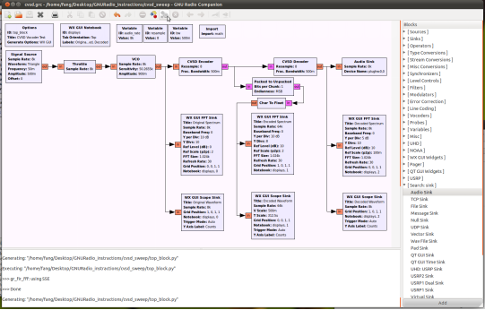
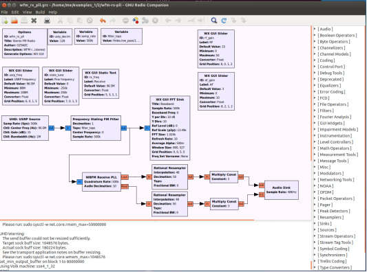
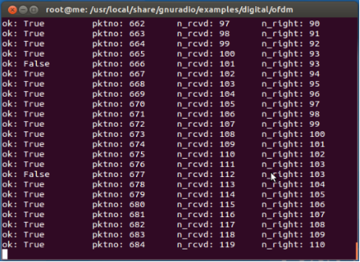
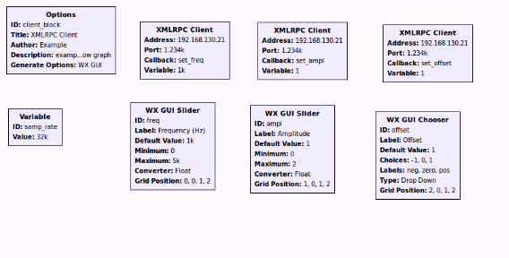
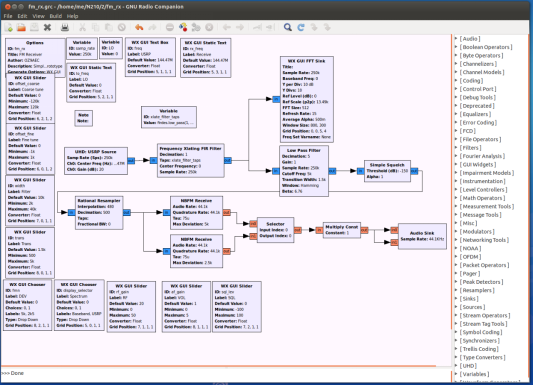
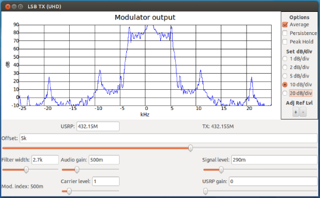
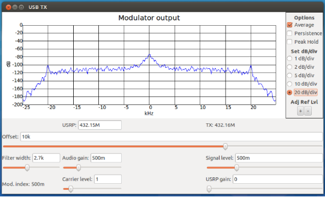
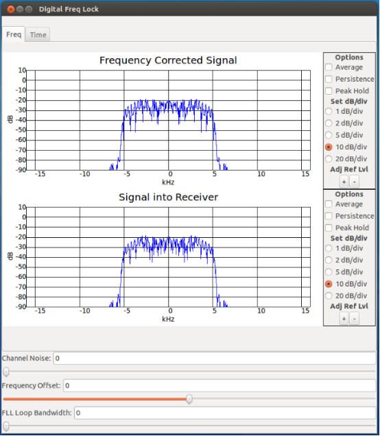
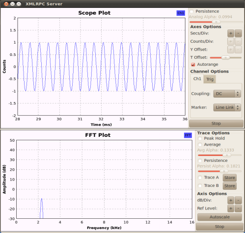

USRP1实验指导书
基于GNURadio-Companion 3.7.3版本的实例。
1 dial_tone
1.1 前言：
GNU Radio 是一个开源的信号处理软件包，可以用它来实现软件定义无线电。这套软件被设计用于Ettus Research公司生产的通用软件无线电外设(USRP)中。为数不多的文档供查阅来开发这项技术。而这个指导书给出的步骤可以在借助GRC的作用，使得软件定义拨号音成功在扬声器输出工作。这里需要读者在安装过了Ubuntu 12.04操作系统，还要安装流行的带有UHD和GNU Radio。
1.2 操作理论：
本例是一个GNU Ｒadio的类似"Hello World"的入门例子。它产生两个sine波形并且把他们输出到声卡的左声道和右声道。本文也证明了软件定义无线电的力量，及它如何简单的使用。他所拥有的就是无限的信号处理能力。当然，这将依赖于你的硬件设备。
1.3 理论分析：
拨号音信号的形成首先要调用gr_sig_source_f产生两个sine波形模块，src0和src1。后缀f表示这个信号源的数据类型是浮点型的，一个波形是350Hz的低声调，另外一个是440Hz的高声调，合在一起他们听起来像一个美国电话拨号音。audio_sink是一个接收器，它把接收到的信号输入到声卡中。
1.4 设备列表：
需要安装过Ubuntu系统、UHD、GNU Radio的PC机。
1.5 流程：
(本流程是基于已成功安装好UHD、GNU Radio 及烧制好固件Firmware和FPGA的image。详情请参阅安装文档)
1、开启一个终端输入命令。
sudo gnuradio-companion
2、从开启界面右边的库中添加必要的block如图dial_tone1所示。
3、双击开启add模块的属性窗口。
4、设置Num inputs值为3, IO Type为Float类型。
5、匹配每个block的数据类型，参考图dial_tone2。(注意所有的模块需要根据图dial_tone2所示按颜色指示修改其数据类型。int为浅绿色，short为黄色，complex为蓝色，float为橙色)。
6、单击标签上的"in""out"在合适的模块间进行连线。
a．个Signal Source模块中的Sample Rate属性设置为samp_rate。
b．Audio Sink模块中的Sample Rate属性设置为samp_rate。
8、按键F5来编译程序，或者单击图标。如果有错误双击检查所有连接模块的属性、数据类型。
9、按键F6来执行程序，或者单击图标。将会出现如图dial_tone3的界面。
10、使用Noise滑条来调整你的系统中的噪音的大小。如果使用Volume滑条调节输出音量的大小。
(原理：声音的大小是靠余弦波的振幅大小控制的)
(噪声源是高斯噪声，服从正态分布的噪声)

图dial_tone1

图dial_tone2

图dial_tone3
2 dpsk_loopback
2.1 前言：
GNU Radio 是一个开源的信号处理软件包，可以用它来实现软件定义无线电。这套软件被设计用于Ettus Research公司生产的通用软件无线电外设(USRP)中。为数不多的文档供查阅来开发这项技术。而这个指导书给出了详细的步骤可以在借助GRC的作用，使得软件定义CVSD连续可变斜率增量调制得以实现。这里需要读者在安装过了Ubuntu 12.04操作系统，还要安装流行的带有UHD和GNU Radio。
2.2 操作理论：
本例是一个GNU Ｒadio的关于余弦波信源的差分移相键控数字调制的例子。它由一个余弦波形源，经过采样流控制得到稳定的采样速率，然后经过了数据包打包、DPSK调制、DPSK解调和数据包解包等过程，并向PC的Speaker输出声音信号，(此信号由产生余弦波的信源频率控制)。本文也证明了软件定义无线电的力量，及它如何简单的使用。他所拥有的就是无限的信号处理能力。当然，这将依赖于你的硬件设备。
2.3 设备列表：
需要安装过Ubuntu系统、UHD和GNU Radio的PC机。
2.4 流程：
(本流程是基于已成功安装好GNU Radio 及烧制好固件Firmware和FPGA的image。详情请参阅安装文档)。
1、开启一个终端输入命令。
sudo gnuradio-companion
2、从开启界面右边的库中添加并连接必要的block如图dpsk_loopback1所示。
3、双击开启add模块的属性窗口。
4、匹配每个block的数据类型，参考图dpsk_loopback1。(注意所有的模块需要根据图dpsk_loopback1所示按颜色指示修改其数据类型。int为浅绿色，short为黄色，complex为蓝色，float为橙色,紫红色为调制后数据char型)。
5、单击标签上的"in" "out"在合适的模块间进行连线。
6、如图dpsk_loopback设置每个模块属性(注意属性value值设置为带有m的，为小数，比如5m就是0.005,200m就是0.2)。
其中不能直接设置的属性如下列出：
a．在Signal Source模块中的Sample Rate属性设置为samp_rate，Frequency属性设置为freq。
b．在Throttle模块中的Sample Rate属性设置为samp_rate。
c．在WX GUI Scope Sink模块中的Sample Rate属性设置为samp_rate,T Scale 属性设置为1/freq。
d．在Audio Sink模块中的Sample Rate属性设置为audio_rate ，Device Name属性设置为plughw:0,0。
7、按键F5来编译程序，或者单击图标。如果有错误双击检查所有连接模块的属性、数据类型。
8、按键F6来执行程序，或者单击图标。将会出现图dpsk_loopback.png所示界面。
9、使用Frequency滑条来调整你的系统中的输入信源频率的大小。从而改变向外输出的声音。

图dpsk_loopback1

图dpsk_loopback2
3 cvsd_sweep
3.1 前言：
GNU Radio 是一个开源的信号处理软件包，可以用它来实现软件定义无线电。这套软件被设计用于Ettus Research公司生产的通用软件无线电外设(USRP)中。为数不多的文档供查阅来开发这项技术。而这个指导书给出了详细的步骤可以在借助GRC的作用，使得软件定义CVSD连续可变斜率增量调制得以实现。这里需要读者在安装过了Ubuntu 12.04操作系统，还要安装流行的带有UHD和GNU Radio。
3.2 操作理论：
本例是一个GNU Ｒadio的关于三角波信源的连续可变斜率增量调制的例子。它由一个Triangle波形源，经过采样流控制得到稳定的采样速率，然后由VCO(压控振荡器)控制产生一个周期性的频谱并显示频谱和波形。以此频谱用CVSD的调制方式显示其频谱和波形，最后CVSD解调后还原其频谱显示出来波形，并向PC输出声音信号，(此信号由频谱控制，当然也可以说是由三角波信源的采样率控制)。本文也证明了软件定义无线电的力量，及它如何简单的使用。他所拥有的就是无限的信号处理能力。当然，这将依赖于你的硬件设备。
3.3 设备列表：
需要安装过Ubuntu系统、UHD和GNU Radio的PC机。
3.4 流程：
(本流程是基于已成功安装好GNU Radio 及烧制好固件Firmware和FPGA的image。详情请参阅安装文档)
1、开启一个终端输入命令。
sudo gnuradio-companion
2、从开启界面右边的库中添加并连接必要的block如图cvsd_Figure1所示。
3、双击开启add模块的属性窗口。
4、匹配每个block的数据类型，参考图cvsd_Figure1。(注意所有的模块需要根据图cvsd_Figure1所示按颜色指示修改其数据类型。int为浅绿色，short为黄色，complex为蓝色，float为橙色,紫红色为调制后数据char型)。
5、单击标签上的"in" "out"在合适的模块间进行连线。
6、如图cvsd_Figure1设置每个模块属性(注意属性value值设置为带有m的，为小数，比如5m就是0.005,200m就是0.2)。
其中不能直接设置的属性如下列出：
a．ignal Source模块中的Sample Rate属性设置为audio_rate
b. 在Audio Sink模块中的Sample Rate属性设置为audio_rate ，Device Name属性设置为plughw:0,0
c. 在Throttle模块中的Sample Rate属性设置为audio_rate
d. 在CVSD Encoder，CVSD Decoder模块中的Resample属性设置为resample,Frac.Bandwidth属性设置为bw。
e. 在VCO模块中的Sample Rate属性设置为audio_rat,Sensitivity属性设置为audio_rate*2*math.pi。
f. 在两个Import模块中的Import属性设置为import math。
g. 在VCO、CVSD Decoder之后引出来的四个Sink模块中的Sample Rate属性设置为audio_rate
h. 在Char To Float之后引出来的两个Sink模块中的Sample Rate属性设置为audio_rate*resample，其中WX GUI Scope Sink模块的 T Scale 属性设置为20.0/(audio_rate*resample)。
i.在WX GUI Notebook 模块的Labels属性设置为['Original','Encoded','Decoded']。
7、按键F5来编译程序，或者单击图标。如果有错误双击检查所有连接模块的属性、数据类型
8、按键F6来执行程序，或者单击图标。将会出现如图original.png,encoded.png,decoded.png所示界面。

图cvsd_Figure1

图original.png

图encoded.png

图decoded.png
4 FM
4.1 前言：
GNU Radio 是一个开源的信号处理软件包，可以用它来实现软件定义无线电。这套软件被设计用于Ettus Research公司生产的通用软件无线电外设(USRP)中。为数不多的文档供查阅来开发这项技术。而这个指导书给出了详细的步骤可以在借助GRC的作用，使得软件定义FM接收器成功工作。这里需要读者在安装过了Ubuntu 12.04操作系统，还要安装流行的带有UHD和 GNU Radio。
4.2 操作理论：
典型的FM接收设备是由一整块完全的硬件电路组成的。而本文就证明了软件定义无线电的力量，及它如何简单的使用。一个对通信原理熟知的人会对这个流程有一个好的理解。然而本文就是为了让这项实验变得简而易行。
4.3 设备列表：
1、USRP1母板
2、一块WBX子板
3、网线，900~1800MHz天线，两根馈线，电源
4、扬声器（PC机上的）
4.4 流程：
1、用网线连接USRP1子板到电脑。
2、用所配备的（天线+馈线）连接到子板的接收端点上，给母板套件通电源。
3、开启另外一个终端输入命令。
sudo gnuradio-companion
4、如图FM_Receiver_1设置每个模块属性。不能直接设置的属性如下列出：
5、按键F5来编译程序，或者单击图标。如果有错误双击检查所有连接模块的属性、数据类型。
6、按键F6来执行程序，或者运行编译时生的fm_rx.py文件。将会出现如图FM_Receiver_2的界面。
7、使用usrp_freq滑条来调整并接收到你本地FM频道。音量也可以通过rf_gain和af_gain滑条来调整。

图FM_Receiver_1

图FM_Receiver_2
5 UHD_TX
5.1 前言：
GNU Radio 是一个开源的信号处理软件包，可以用它来实现软件定义无线电。这套软件被设计用于Ettus Research公司生产的USRP1系列，通过构建的无线网络，对信号进行收发，此实验为接收信号的平台。
5.2 操作理论：
本例是GNU Ｒadio借助USRP设备平台用来测试发送的例子。
5.3 设备列表：
需要安装过Ubuntu系统、UHD、GNU Radio的PC机，USRP1。
5.4 流程：
(本流程是基于已成功安装好GNU Radio 及烧制好固件Firmware和FPGA的image。详情请参阅安装文档)
1.开启一个终端输入命令
sudo gnuradio-companion
2.从开启界面右边的库中添加并连接必要的block如图uhd_tx_dpsk.png所示。
3.双击开启add模块的属性窗口。
4.匹配每个block的数据类型，参考图uhd_tx_dpsk.png。(注意所有的模块需要根据图uhd_rx_dpsk.png所示按颜色指示修改其数据类型。int为浅绿色，short为黄色，complex为蓝色，float为橙色,紫红色为调制后数据char型)
6.单击标签上的"in""out"在合适的模块间进行连线。
7.如图uhd_tx_dpsk.png设置每个模块属性(注意属性value值设置为带有m的，为小数，比如5m就是0.005,200m就是0.2)。
其中不能直接设置的属性如下列出：
a.在UHD:USRP Sink模块中的Device Addr属性设置为address, Sample Rate属性设置为samp_rate, Ch0:Center Freq(Hz)属性设置为tun_freq, Ch0:Gain(dB)属性设置为tun_gain。
b.在WX GUI FFT Sink模块中的Sample Rate属性设置为samp_rate, Baseband Freq属性设置为tun_freq。
c.在Multiply Const模块中的Constant属性设置为ampl。
d.在ID为tun_gain的WX GUI Slider中属性Default Value设置为gain。
e.在ID为tun_freq的WX GUI Slider中属性Default Value设置为freq。
f.在DPSK Demod模块中属性Samples/Symbol设置为samps_per_sym
8.按键F5来编译程序，或者单击图标。如果有错误双击检查所有连接模块的属性、数据类型
9.按键F6来执行程序，或者单击图标。将会出现如图UHD_TX_Figure.png所示界面。
注意图中的数值带有'k'的可以用e3后缀，如5k可以填成5e3.'M'代表e6,'G'代表e9.
数值需要填写2的8次方可以用2**8表示。

图uhd_tx_dpsk.png

图UHD_TX_Figure.png
6 benchmark数据传输
6.1 前言：
benchmark是GNU Radio中很经典的例子。
6.2 操作理论：
典型的benchmark接收设备是由一整块完全的硬件电路组成的。而本文就证明了软件定义无线电的力量，及它如何简单的使用。一个对通信原理熟知的人会对这个流程有一个好的理解。然而本文就是为了让这项实验变得简而易行。
6.3 设备列表：
1、两块USRP1母板
2、两块rfx900的子板。
3、网线两根，900~1800MHz天线四支，两个6V电源。
4、两台电脑：PC_A，PC_B。
6.4 流程：
1. benchmark发射：PC_A中打开终端root用户下输入列命令。
cd /usr/local/share/gnuradio/examples/digital/ofdm/
./benchmark_tx.py –f 900M
如下图T-1，成功发送数据。

图 T-1
2. benchmark接收：PC_B中打开终端root用户下输入列命令
cd /usr/local/share/gnuradio/examples/digital/ofdm/
./benchmark_rx.py –f 900M –R A
如下图R-1，成功接收数据。

图 R-1
7 频谱分析
7.1 前言：
频谱分析是GNU Radio中很经典的例子。
7.2 操作理论：
典型的频谱分析设备是由一整块完全的硬件电路组成的。而本文就证明了软件定义无线电的力量，及它如何简单的使用。一个对通信原理熟知的人会对这个流程有一个好的理解。然而本文就是为了让这项实验变得简而易行。
7.3 设备列表：
1、两块USRP1 母板。
2、两块rfx900的子板。
3、网线两根，900~1800MHz天线四支，两个6V电源。
4、两台电脑：PC_A，PC_B。
7.4 流程
1、benchmark发射：PC_A中打开终端root用户下输入列命令
cd /usr/local/share/gnuradio/examples/digital/narrowband/
./benchmark_tx.py –f 900M
如上图T-1，成功发送数据。
2、使用频谱接收：PC_B中打开终端root用户下输入列命令
uhd –f 900M
如下图R-2,频谱仪接收到的数据信息

图R-2
8 xmlrpc_client
8.1 前言：
XMLRPC，顾名思义就是应用了XML技术的RPC。使用XML文本的方式传输命令和数据。借助于网络协议的RPC机制是为了提高分立机器的“互操作性”而发明出来的技术。
8.2 操作理论：
本例介绍在已建立的网络中，本地PC的客户机调用远端PC的服务器中程序，并由远端PC返回结果信息。本地接收到信息后交由上层来处理。
本篇为客户端设置。
8.3 设备列表：
需要安装过Ubuntu系统和GNU Radio的PC机，当然也可以借助USRP平台提供无线网络通路。
8.4 流程：
(本流程是基于已成功安装好GNU Radio 及烧制好固件Firmware和FPGA的image。详情请参阅安装文档)
1、开启一个终端输入命令
sudo gnuradio-companion
2、从开启界面右边的库中添加并连接必要的block如图xmlrpc_client.png所示。
3、双击开启add模块的属性窗口。
4、匹配每个block的数据类型，参考图xmlrpc_client.png。(注意所有的模块需要根据图xmlrpc_client.png所示按颜色指示修改其数据类型。int为浅绿色，short为黄色，complex为蓝色，float为橙色,紫红色为调制后数据char型)
6、单击标签上的"in""out"在合适的模块间进行连线。
7、如图xmlrpc_client.png设置每个模块属性(注意属性value值设置为带有m的，为小数，比如5m就是0.005,200m就是0.2)。
其中不能直接设置的属性如下列出：
a．在WX GUI Chooser模块的Choices属性设置为[-1,0,1], Labels属性设置为["neg", "zero", "pos"],注意带上括号。
b．在ID为xmlrpc_client的XMLRPC Client模块的Variable属性设置为freq。
c．在ID为xmlrpc_client0的XMLRPC Client模块的Variable属性设置为ampl。
d．在ID为xmlrpc_client1的XMLRPC Client模块的Variable属性设置为offset。
8、按键F5来编译程序，或者单击图标。如果有错误双击检查所有连接模块的属性、数据类型。
9、 按键F6来执行程序，或者单击图标。将会出现如图XMLRPC Client.png所示界面。
注意客户机与服务器的端口号一定要一致。

图xmlrpc_client.png

图XMLRPC Client.png
9 xmlrpc_server
9.1 前言：
XMLRPC，顾名思义就是应用了XML技术的RPC。使用XML文本的方式传输命令和数据。借助于网络协议的RPC机制是为了提高分立机器的“互操作性”而发明出来的技术。
9.2 操作理论：
本例介绍在已建立的网络中，本地PC的客户机调用远端PC的服务器中程序，并由远端PC返回结果信息。本地接收到信息后交由上层来处理。
本篇为服务器端设置。
9.3 设备列表：
需要安装过Ubuntu系统和GNU Radio的PC机，当然也可以借助USRP平台提供无线网络通路。
9.4 流程：
(本流程是基于已成功安装好GNU Radio 及烧制好固件Firmware和FPGA的image。详情请参阅安装文档)
1、开启一个终端输入命令
sudo gnuradio-companion
2、从开启界面右边的库中添加并连接必要的block如图xmlrpc_server.png所示。
3、双击开启add模块的属性窗口。
4、匹配每个block的数据类型，参考图xmlrpc_server.png。(注意所有的模块需要根据图xmlrpc_server.png所示按颜色指示修改其数据类型。int为浅绿色，short为黄色，complex为蓝色，float为橙色,紫红色为调制后数据char型)
5、单击标签上的"in""out"在合适的模块间进行连线。
6、如图xmlrpc_server.png设置每个模块属性(注意属性value值设置为带有m的，为小数，比如5m就是0.005,200m就是0.2)。
其中不能直接设置的属性如下列出：
a.在Singnal Source模块中的Sample Rate属性设置为samp_rate, Frequency属性设置为freq, Amplitude属性设置为ampl, Offset属性设置为offset。(注意server的采样率 不能小于 client 中频率可调范围最大值的2倍)
b.在WX GUI FFT Sink模块中的Sample Rate属性设置为samp_rate。
c.在WX GUI Scope Sink模块中的Sample Rate属性设置为samp_rate。
d.在Throttle模块中的Sample Rate属性设置为samp_rate。
e.在ID为rx_freq_off的WX GUI Slider中属性Default Value设置为freq_offset。
8、按键F5来编译程序，或者单击图标。如果有错误双击检查所有连接模块的属性、数据类型。
9、 按键F6来执行程序，或者单击图标。将会出现如图XMLRPC Server.png所示界面。
注意客户机与服务器的端口号一定要一致。

图xmlrpc_server.png

图XMLRPC Server.png
10 飞机轨迹跟踪
10.1 前言：
GNU Radio 是一个开源的信号处理软件包，可以用它来实现软件定义无线电。这套软件被设计用于Ettus Research公司生产的USRP1系列，通过构建的网络，对信号进行收发，此实验为接收信号的平台。
10.2 操作理论：
本例是GNU Ｒadio借助USRP设备平台用来测试接收的例子。
10.3 设备列表：
需要安装过Ubuntu系统、UHD、GNU Radio的PC机，USRP1
10.4 流程：
运行流程见文件夹“飞机轨迹跟踪”的usrp设备跟踪飞机轨迹.pdf文档。
第二章
本章节主要讲述的是有关接收机和发射机的一些GRC的实例，基于GNURadio-Companion 3.7.3版本。
1 NBFM接收机
1.1 实验说明：
这是两个NBFM解调器一个简单的窄带FM接收机，以便为5kHz和2.5kHz偏差之间切换：
在文本字段中输入USRP的频率
翻译过滤器（快速调整使用频率的通带内调）
变量的过滤器的宽度和形状
静噪支持为5kHz和2.5kHz偏差
附带源码FM1(fm_rx.grc)
FM2(usrp_nbfm_receive_nav.grc)
1.2 实验环境：
软件：1、 安装Ubuntu 12.04操作系统
2、 Gnuradio-companion 3.7.3和UHD（3.7.1）
硬件：1、 USRP1母板
2、 WBX子板
FM1(fm_rx.grc):


FM2(usrp_nbfm_receive_nav.grc):


2 AM接收器
2.1 实验说明：
这是一个简单的AM接收器，具有可变低通滤波器与固定利率和水平的自动增益控制：
在文本字段中输入USRP的频率
翻译过滤器（快速调整使用频率的通带内调）
变量的过滤器的宽度和形状
自动增益控制
附带源码：(（UHD版）am_rx.grc)
2.2 实验环境：
软件：1、 安装Ubuntu 12.04操作系统
2、 Gnuradio-companion 3.7.3和UHD（3.7.1）
硬件：1、 USRP1母板
2、 WBX子板


3 SSB接收器
3.1 实验说明
这是一个简单的SSB/ CW接收机具有一个可调带通过过滤器和自动增益控制与快速/中/速度缓慢：
在文本字段中输入USRP的频率
翻译过滤器（快速调整使用频率的通带内调）
可变滤波器的宽度，偏移和塑造
边被选择使用过滤器
自动增益控制（快/中/慢）
附带源码： (ssb_rx.grc)
3.2 实验环境
软件：1、 安装Ubuntu 12.04操作系统
2、 Gnuradio-companion 3.7.3和UHD（3.7.1）
硬件：1、 USRP1母板
2、 WBX子板


4 WFM接收器
4.1 实验说明
数据记录在GNU收音机伴侣是很容易的，我们只需添加一个filesink流图，并把它连接到我们要记录的数据。 为了防止以前录制的文件被删除，当我们重新启动流程图，我们可以使用当前的日期和时间，每次启动时的GNU Radio的流图生成一个唯一的文件名。
附带源码：WFM: (wfm_rx_pll.grc)
4.2 实验环境
软件：1、 安装Ubuntu 12.04操作系统
2、 Gnuradio-companion 3.7.3和 UHD（3.7.1）
硬件：1、 USRP1母板
2、 WBX子板
WFM:(wfm_rx_pll.grc)


5 SSB发射机(带通滤波)
5.1 实验说明
单边带发射机是基于的简单原理是调制,载波是调制的音频信号。
当然，载波不具有相同的含义在软件无线电中，所以我们只调制一个复杂的正弦波频率为0Hz。
从调制器的输出是一个AM信号，我们选择使用一个复杂的带通滤波器所需的边带。
在文本字段中输入USRP的频率
USRP的频率在+ / - 25kHz的调
可变滤波器的宽度
音频，载体，信号和USRP的增益电平控制
附带源码：基于LSB发射机: (lsb_tx_bpf.grc)
基于USB的发射机:(usb_tx_bpf.grc)
5.2 实验环境：
软件：1、 安装Ubuntu12.04操作系统
2、 Gnuradio-companion 3.7.3和UHD（3.7.1）
硬件：1、 USRP1母板
2、 WBX子板
1.基于LSB发射机: (lsb_tx_bpf.grc)


2.基于USB的发射机:(usb_tx_bpf.grc)


第三章
本章的实例主要是有关无线电的一些测试实例，主要来源于所附光盘系统里的 gnuradio/examples/grc 目录。
1、variable_config(变量配置)


2、ber_simulation 误码率模拟


3、digital_freq_lock(数字频率锁定)



4、dpsk_loopback(微分相移键控回路)


5、pam_sync(脉冲幅度调制同步)


6、pam_timing(脉冲幅度调制时序)


7、Xmlrpc-server-client
xml rpc是使用http协议做为传输协议的rpc机制，使用xml文本的方式传输命令和数据。一个rpc系统，包括2个部分:1.rpc client，用来向rpc server调用方法,并接收方法的返回数据;2.rpc server,用于响应rpc client的请求，执行方法，并回送方法执行结果。RPC是Remote Procedure Call的缩写，翻译成中文就是远程过程调用，是一种在本地的机器上调用远端机器上的一个过程（方法）的技术，这个过程也被大家称为“分布式计算”，是为了提高各个分立机器的“互操作性”而发明出来的技术。
Xmlrpc-server:


Xmlrpc-client: